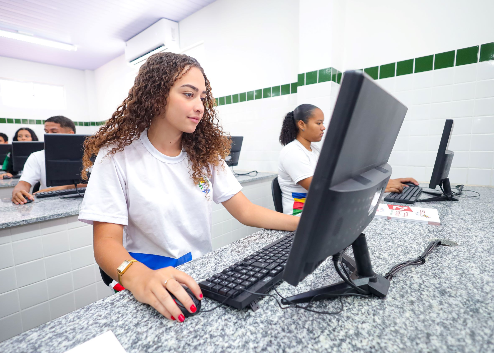
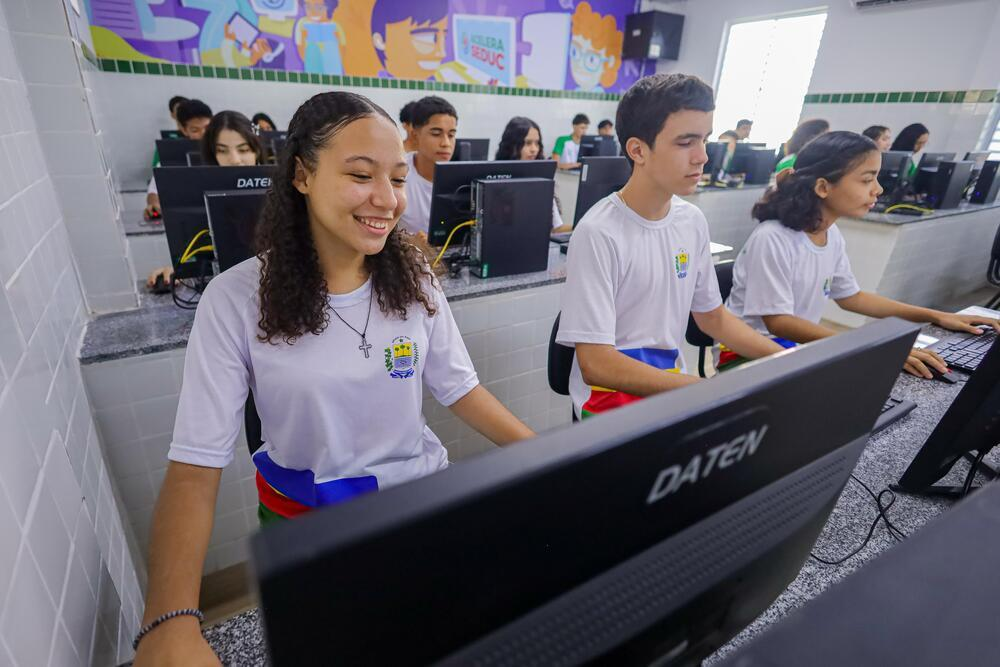

Aprender criando
Pratique os conceitos por meio de desafios, protótipos, páginas, aplicativos e ideias de sistemas.
Já imaginou criar um site, desenvolver um aplicativo ou construir um sistema que resolva um problema real? No Curso Técnico em Desenvolvimento de Sistemas do CETI Helvídio Nunes , a tecnologia deixa de ser apenas algo que você usa e passa a ser algo que você aprende a construir.
Uma formação que conecta Ensino Médio, conhecimento técnico, criatividade, colaboração e preparação para os desafios do mundo digital.
Estudar, experimentar, colaborar e transformar ideias em projetos.


Desenvolvimento de Sistemas é uma área para quem gosta de descobrir como as coisas funcionam, pensar em soluções e usar a criatividade para construir ferramentas digitais. O curso apresenta fundamentos da tecnologia e aproxima os estudantes da maneira como sites, aplicativos e sistemas são planejados e desenvolvidos.
É o campo da tecnologia dedicado à criação, manutenção e evolução de soluções digitais. Um sistema pode facilitar uma tarefa, organizar informações, conectar pessoas, automatizar processos ou tornar um serviço mais acessível. Para construir essas soluções, profissionais estudam problemas, planejam funcionalidades, escrevem código, testam e melhoram continuamente o que criaram.
Durante a formação, o estudante começa a compreender esse processo: da ideia inicial até a construção de uma solução, passando por lógica, linguagens, organização de dados, interfaces e boas práticas.
A tecnologia está presente em praticamente todos os setores: educação, saúde, comércio, comunicação, indústria, entretenimento e serviços públicos. Conhecer seu funcionamento pode abrir caminhos para continuar estudando, participar de projetos, desenvolver iniciativas próprias ou buscar oportunidades profissionais no futuro.
Mais do que decorar comandos, a proposta é desenvolver autonomia, raciocínio, curiosidade e a capacidade de resolver problemas — habilidades que acompanham o estudante dentro e fora da informática.
Uma formação que une Ensino Médio e conhecimentos técnicos para você descobrir seu potencial, desenvolver habilidades e construir projetos com propósito.
Pratique os conceitos por meio de desafios, protótipos, páginas, aplicativos e ideias de sistemas.
Desenvolva lógica, resolução de problemas, criatividade, comunicação, organização e trabalho em equipe.
Projetos autorais podem mostrar sua evolução e ajudar a construir um portfólio de aprendizagem.
Conheça caminhos em desenvolvimento web, software, dados, banco de dados, suporte e outras áreas digitais.
O curso faz parte da Educação Profissional integrada ao Ensino Médio da rede estadual. Conheça também os projetos, notícias e iniciativas da Secretaria de Educação do Piauí.
Visitar o portal oficial da SEDUC-PI ↗A formação técnica reúne diferentes áreas que se complementam. Cada conhecimento ajuda a entender uma parte do processo de criação de sistemas e, aos poucos, permite desenvolver projetos mais completos.
Aprender a dividir problemas em etapas, identificar padrões, organizar instruções e planejar soluções. A lógica é a base para programar, independentemente da linguagem utilizada.
Conhecer como sites são estruturados, estilizados e tornam-se interativos. Com HTML, CSS e JavaScript, é possível criar páginas, menus, formulários e experiências digitais.
Organizar e consultar informações com estrutura e segurança. Estudar tabelas, relacionamentos, registros, consultas e fundamentos da linguagem SQL.
Usar linguagens e ferramentas para transformar ideias em instruções que o computador executa. Entender variáveis, condições, repetições, funções e estruturas de dados.
Antes de escrever código, compreender quem utilizará o sistema, qual problema precisa ser resolvido e quais recursos são necessários. Planejamento faz parte do desenvolvimento.
Refletir sobre privacidade, cuidado com dados, uso ético da tecnologia, acessibilidade e responsabilidade ao criar ferramentas que outras pessoas podem utilizar.
Um site reúne diferentes tecnologias trabalhando em conjunto. A estrutura define o conteúdo; o estilo organiza a aparência; e a programação permite que a página responda às ações de quem está navegando.
Imagine um sistema escolar que precisa organizar estudantes, turmas, atividades e notas. O banco de dados ajuda a guardar os registros de forma estruturada, permitindo consultar, cadastrar e atualizar informações quando necessário.
O aprendizado pode avançar gradualmente, combinando conceitos, exercícios, experimentação e projetos. A sequência abaixo é uma visão ilustrativa de uma jornada; as disciplinas e sua distribuição dependem da matriz curricular adotada pela escola.
Conhecer a tecnologia, desenvolver raciocínio lógico, aprender a interpretar problemas e dar os primeiros passos na programação. Exercícios ajudam a transformar ideias em instruções claras.
Explorar linguagens, páginas web, dados, estruturas e recursos de desenvolvimento. Praticar, investigar erros, testar possibilidades e ampliar a compreensão de como sistemas funcionam.
Planejar soluções, unir conhecimentos, trabalhar em equipe, apresentar ideias e aprimorar projetos. Construir experiências que demonstrem o aprendizado e incentivam novos desafios.
Existem muitas linguagens e tecnologias na programação. Cada uma possui características e usos diferentes. Conhecer os fundamentos ajuda a aprender novas ferramentas com mais facilidade.
Organiza o conteúdo e define os elementos de uma página web.
Cria estilos, layouts, identidade visual e adaptações para diferentes dispositivos.
Permite adicionar comportamentos, interações e funcionalidades a páginas web.
Uma linguagem versátil utilizada em automação, dados, aplicações e diversos projetos.
Utilizada para consultar, inserir, atualizar e organizar dados em bancos relacionais.
Recursos de versionamento e colaboração que ajudam a acompanhar mudanças e compartilhar projetos.
Projetos são uma forma de colocar conhecimentos em prática. Eles ajudam a exercitar criatividade, planejamento, colaboração e a percepção de que a tecnologia pode ser criada para atender necessidades reais.
Uma página para registrar tarefas, separar matérias, acompanhar prazos e visualizar objetivos de estudo.
Interface · Formulários · LógicaUma solução digital para apresentar informações, divulgar ações, organizar eventos ou facilitar algum processo da escola.
Pesquisa · Planejamento · WebIdentificar um desafio cotidiano e imaginar uma solução. Prototipar, testar com colegas, receber sugestões e evoluir a proposta.
Inovação · Trabalho em equipe · ProtótipoA formação técnica pode ser o começo de uma jornada. Ela ajuda a descobrir interesses, fortalecer a base para estudos posteriores e compreender algumas possibilidades de atuação no universo da tecnologia.
Com mais estudos e experiência, existem diferentes caminhos dentro da tecnologia. As funções e requisitos variam, e muitas carreiras exigem formação complementar e prática contínua.
O curso técnico também pode ajudar quem pretende seguir para o ensino superior. Áreas como Análise e Desenvolvimento de Sistemas, Ciência da Computação, Engenharia de Software e Sistemas de Informação permitem aprofundar conhecimentos e explorar novas especialidades.
Além do conteúdo técnico, vale desenvolver comunicação, inglês, colaboração, organização, pensamento crítico e responsabilidade — competências importantes em diferentes caminhos profissionais.
Explore, faça perguntas, experimente ideias e descubra como o conhecimento em tecnologia pode ajudar você a criar possibilidades para si e para outras pessoas.
Se você está visitando esta página para entender melhor o curso, estas respostas podem ajudar a dar os primeiros passos.
Não é necessário chegar sabendo desenvolver sistemas. O aprendizado começa pelos fundamentos e evolui com estudo, exercícios, orientação e prática. Ter curiosidade e vontade de aprender já ajuda bastante.
Matemática e raciocínio lógico podem ser úteis, mas desenvolvimento também envolve criatividade, comunicação, organização, pesquisa, design, colaboração e compreensão das necessidades de outras pessoas.
O desenvolvimento web é uma das áreas relacionadas à formação. Os conceitos de estrutura, estilo e interatividade são importantes para entender como páginas e aplicações web são construídas.
Você pode criar projetos pessoais, continuar estudando, montar um portfólio, participar de atividades e conhecer áreas profissionais de tecnologia. O curso é uma base; a evolução depende também da prática e da continuidade.
A rotina integra as atividades do Ensino Médio à formação profissional, com uma jornada escolar ampliada. A organização específica, as atividades e a matriz curricular são definidas pela escola e pela rede de ensino.
Uma boa ideia não precisa ser enorme. Projetos úteis, bem pensados, acessíveis e que resolvem um problema real são ótimas oportunidades de aprender. O processo de criar, testar e melhorar é parte essencial.
Não espere dominar tudo para começar. Consulte materiais, pratique com pequenos exemplos, explore tutoriais e crie seus próprios desafios. Aprender programação é um processo contínuo de tentativa, descoberta e evolução.